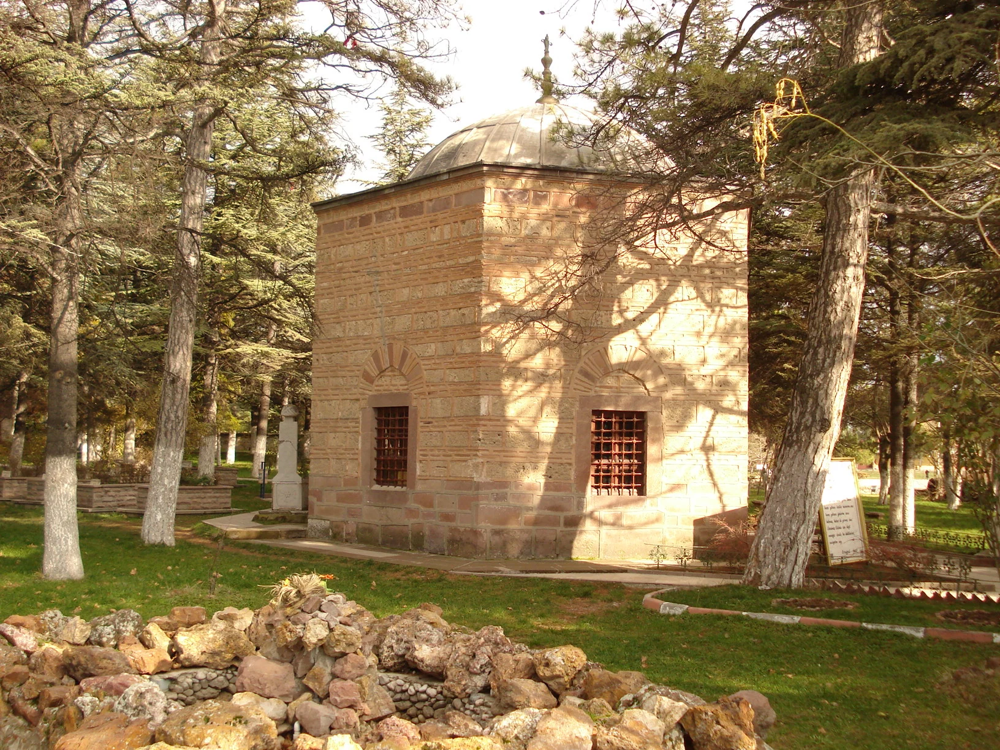
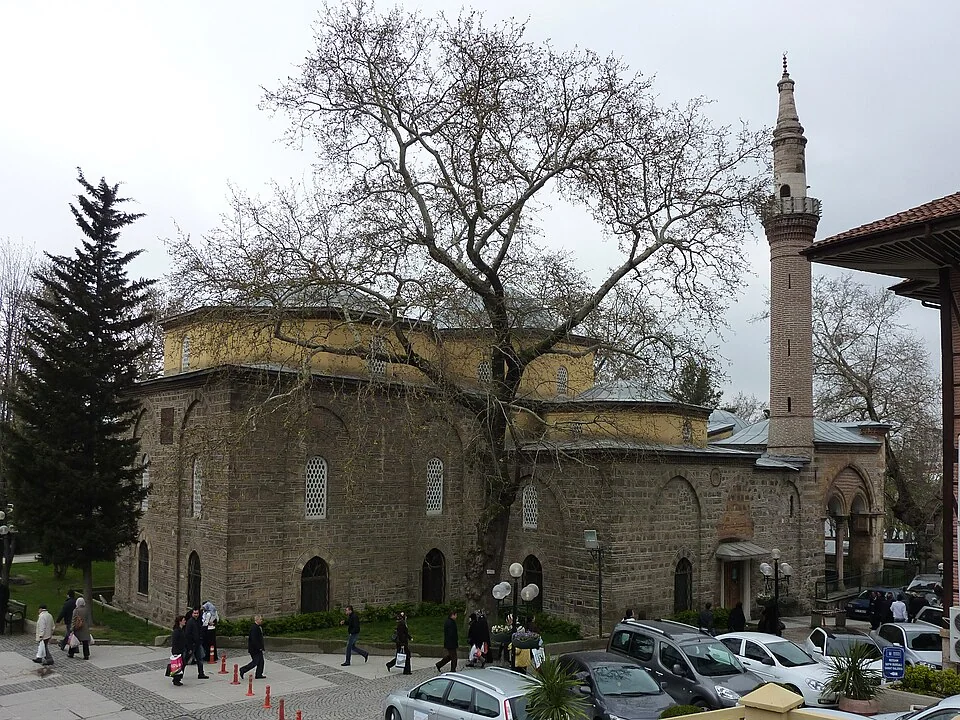

Osmanlıların ortaya çıktığı dünya, tek bir hanedanın boşlukta yükseldiği bir yer değildi. Anadolu’da Selçuklu otoritesi zayıflarken çok sayıda Türkmen beyliği güç kazanıyor; kuzeybatıda Bizans’ın sınır kaleleri, yerel yöneticiler ve farklı topluluklar aynı coğrafyayı paylaşıyordu. Osmanlı Beyliği de bu hareketli uç bölgesinde, zaman içinde kurulan ittifaklar, askerî başarılar ve şehir yönetimi sayesinde büyüdü.
“1299’da kuruldu” demek ne kadar kesin?
1299, Osmanlı Devleti’nin kuruluş tarihi olarak sıkça tekrarlanır; ancak dönemin kaynakları bu yıl için açık bir “devlet ilanı” kaydetmez. İlk Osmanlı kronikleri olaylardan çok sonra, çoğunlukla 15. yüzyılda kaleme alındı. Bu nedenle kuruluşu tek bir tören ya da tarihle açıklamak yerine, Osman Bey’in bölgesel bir lider olarak güç kazanması ve beyliğin sonraki kuşakta kurumsallaşması şeklinde düşünmek daha ihtiyatlıdır.
Osman’ın tarihsel görünürlüğünü artıran en önemli erken olaylardan biri, Bizans tarihçisi Georgios Pachymeres’in aktardığı 1302 Bafeus (Koyunhisar) Savaşı’dır. Osmanlıların Bizans kuvvetlerine karşı kazandığı bu başarı, Osman Bey’in çevredeki Türkmen güçleri arasında öne çıkmasına katkıda bulundu. Yine de tek bir savaş, tamamlanmış bir devletin doğduğu anlamına gelmez; bu, daha uzun bir siyasi dönüşümün işaretlerinden biridir.
Uç bölgesinde Osman Gazi
Osman Bey’in faaliyet alanı, Bizans topraklarıyla komşu olan kuzeybatı Anadolu’ydu. Uç bölgelerinde askerî akınlar kadar yerel beylerle ilişkiler, kalelerin kontrolü, ticaret yolları ve yeni alınan yerlerde düzen kurmak da önemliydi. Bizanslı tarihçi Pachymeres, Osman’ı sınır hattındaki Türk önderlerinden biri olarak anar; Osmanlı kronikleri ise onun çevresindeki gazileri ve yerel aktörleri bir araya getiren liderliğini vurgular.
Bu anlatıların hepsi aynı tür kanıt değildir. Çağdaş Bizans kaydı, sınır çatışmalarına dair erken bir dış bakış sunar; daha geç Osmanlı kronikleri ise hanedanın kökenini ve meşruiyetini anlamlandırmaya çalışır. İkisini birlikte okumak, hem dönemin siyasetini hem de sonraki kuşakların geçmişi nasıl hatırladığını görmemizi sağlar.

Ertuğrul ve Kayı bağlantısı: rivayet ile kanıt
Osman’ın babasının Ertuğrul olduğu, erken Osmanlı anlatılarında yer alır; fakat Ertuğrul’un hayatına ilişkin ayrıntılar sınırlı ve geç kaynaklara dayanır. Ailenin Kayı boyuna bağlanması da aynı dikkatle ele alınmalıdır. Kayı soy kütüğü Osmanlı kroniklerinde özellikle 15. yüzyılda belirginleşir; TDV İslâm Ansiklopedisi, bu soy anlatılarının hanedan siyasetinin etkisiyle şekillendiğini ve tarihî kanıtların tartışmalı olduğunu vurgular.
Bu, Osmanlıların Türkmen kökenini ya da dönemin toplumsal bağlarını reddetmek anlamına gelmez. Daha dar ve doğru iddia şudur: elimizdeki kaynaklar, Osman’ın Kayı boyundan geldiğini çağdaş ve kesin bir belgeyle doğrulamaya yetmez. Ertuğrul’un Söğüt-Domaniç çevresindeki hayatına ilişkin anlatıları da tarihsel hatıralarla sonradan oluşan rivayetleri birbirinden ayırarak okumayı gerektirir.
Osman’dan Orhan’a: Bursa’nın merkez oluşu
Osman’ın ölüm tarihi de kesin değildir. Orhan’ın beyliğin başına geçişi, bir vakfiye kaydına dayanılarak 1324’e tarihlenir; bu bilgi Osman’ın ölümünü yaklaşık 1323-1324 aralığına yerleştirir. Böylece 1326’da Bursa’nın alınması, Osman’ın değil oğlu Orhan’ın dönemine denk gelir. Bursa, uzun bir kuşatma ve ablukanın ardından 6 Nisan 1326’da Osmanlıların eline geçti.
Yeni yönetim kenti yalnızca askerî bir merkez olarak kullanmadı. Orhan döneminde Bursa’da cami, imaret, medrese, hamam ve han gibi kurumların bulunduğu yapılar kuruldu; şehir beyliğin yönetim ve ticaret merkezlerinden biri hâline geldi. 1327’de burada gümüş akçe bastırılması, yeni yönetimin mali ve idari kapasitesinin gelişmesine dair önemli bir işarettir. Ardından İznik’in 1331’de alınması ve başka kentlerde kalıcı yönetim kurulması, beyliğin ölçeğini genişletti.

Bir beylikten devlete: değişimin ritmi
Osmanlı Beyliği’nin büyümesini yalnızca savaşlarla açıklamak eksik kalır. Yeni bölgelerdeki yerel halkla kurulan ilişkiler, vakıflar ve şehir kurumları, gelir kaynaklarının düzenlenmesi ve farklı toplulukların yönetim altına alınması da kalıcılığı belirledi. Orhan döneminde para basımı ve Bursa’daki kurumlaşma, daha örgütlü bir yönetimin geliştiğini gösterir; ancak merkezî devlet yapısı bir anda tamamlanmadı ve sonraki hükümdarlar döneminde de dönüşmeye devam etti.
Bu küçük uç beyliğinin sonraki yüzyıllarda büyük bir imparatorluğa dönüşmesi, kuruluş dönemini kaçınılmaz bir “önceden yazılmış başarı öyküsü” gibi okumamıza neden olabilir. Oysa Anadolu’daki diğer beylikler de güçlü aktörlerdi; Osmanlıların yükselişi coğrafi konum, siyasal fırsatlar, askerî kapasite ve kurumsal uyumun bir araya geldiği tarihsel bir süreçti. Sonucu biliyor olmamız, o dönemde yaşayanların geleceği bildiği anlamına gelmez.
Kaynaklar ve görseller
- TDV İslâm Ansiklopedisi, “Osman I”. Osman’ın hayatı, erken Osmanlı kaynaklarının niteliği ve Kayı bağlantısına ilişkin tartışmalar.
- TDV İslâm Ansiklopedisi, “Orhan”. Orhan’ın 1324’te beyliğe geçişi, Bursa’nın 1326’da alınması ve erken kurumlaşma.
- TDV İslâm Ansiklopedisi, “Osmanlılar” ve “Bursa”. Beyliğin genişlemesi ve Bursa’nın merkez hâline gelişi.
- World History Encyclopedia, “Osman I”. Osman’ın yaşamına ilişkin kaynak sınırlılıkları ve kuruluş anlatılarının sonraki yüzyıllarda biçimlenmesi.
- Anadolu beylikleri haritası: Khateeb88 / Wikimedia Commons, CC BY-SA 3.0 kaydı. Ertuğrul Gazi Türbesi fotoğrafı: Maderibeyza / Wikimedia Commons, CC BY-SA 3.0 kaydı. Orhan Gazi Camii fotoğrafı: Adbar / Wikimedia Commons, CC BY-SA 3.0 kaydı.
1299, geleneksel kuruluş yılı olarak yaygın biçimde kullanılır; ancak çağdaş belgeler bir kuruluş gününü doğrulamaz. Osmanlıların erken dönemi, farklı tarihlerde yazılmış kronikler ve sınırlı sayıdaki çağdaş kayıt birlikte değerlendirilerek anlatılmalıdır. Kaynaklara 8 Kasım 2026 tarihinde erişilmiştir.